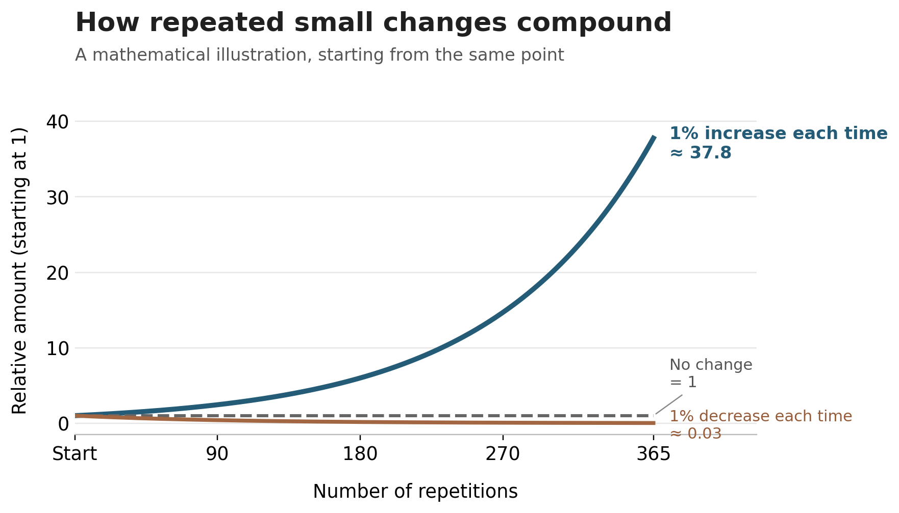

The One Percent Principle
A practical way of thinking about small change over time
Many colleagues will already be familiar with this idea in one form or another. I’m using it here because it gives us a useful way of thinking about periods when the steps feel too small to matter, or when someone is doing what they can and still feels like nothing is shifting.
James Clear has popularised the idea of a 1% improvement as a way of illustrating how small, repeated actions can add up over time.
If you look at this on a graph, the early phase is almost flat. For a long time, the lines sit close together and it can feel like nothing is happening. This is often where people start to doubt themselves or the process. The effort feels real, but the payoff feels absent.

The graph is useful as an illustration of compounding. Not every useful change works through compounding, but repeated actions can help create conditions in which further change becomes possible. Real change is usually much messier: noisy, interrupted and non-linear. There will be lapses, periods of holding steady, sudden changes and periods when someone is doing considerable work just to prevent things getting worse.
The idea is probably best used conversationally, sometimes putting language around something the person is already doing. This can help someone notice the significance of changes they might otherwise dismiss, explore what feels possible next, or make sense of why apparently modest changes might still matter.
One percent is not the goal. It’s a way of keeping changes small enough to repeat.
What counts as small will be different for different people. Small refers to the size of the change, not the effort involved in making it. A change that looks fairly modest from the outside may take considerable effort for the person making it. The point isn’t to find the least someone can do and call it progress. The change still needs to matter: it should make something a little safer, more stable or more manageable, or move something in a direction the person actually wants to go.
In practice, this can mean paying attention to changes around substance use as well as changes to the substance use itself. Someone might eat before they drink alcohol, carry naloxone, avoid using alone, delay their first drink or use, get to the pharmacy more consistently, make an appointment they would normally avoid, or change something about where or who they use substances with. It might be something apparently less connected, such as eating earlier, drinking more water or getting a little more sleep. Changes like these can affect risk, routine, energy, mood and what becomes possible next.
Sometimes these changes simply help someone hold on to ground they already have. That matters too.
This way of thinking supports steadiness rather than intensity. It doesn’t depend on confidence or motivation being high. It keeps the focus on changes that are small enough to repeat and meaningful enough to the person to be worth making.